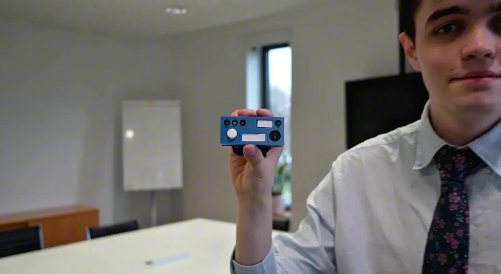
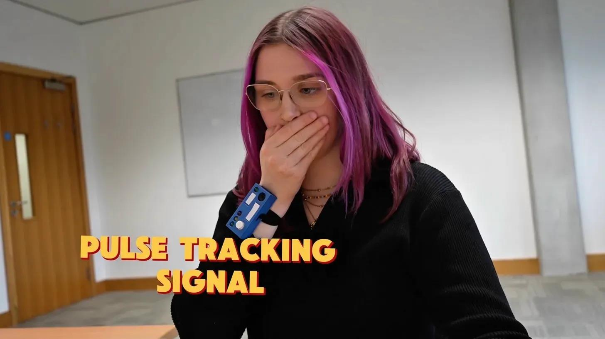
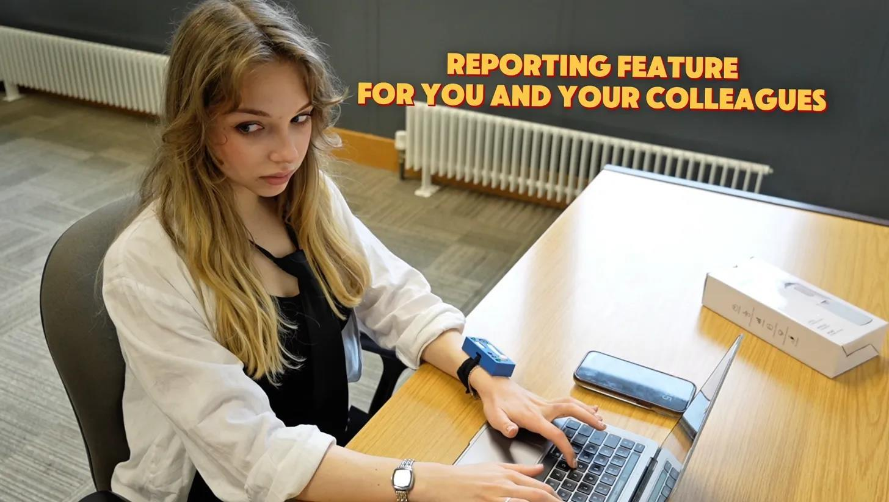
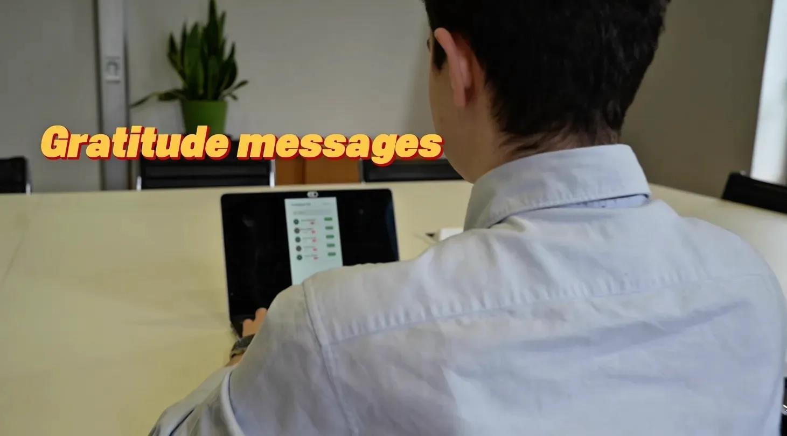
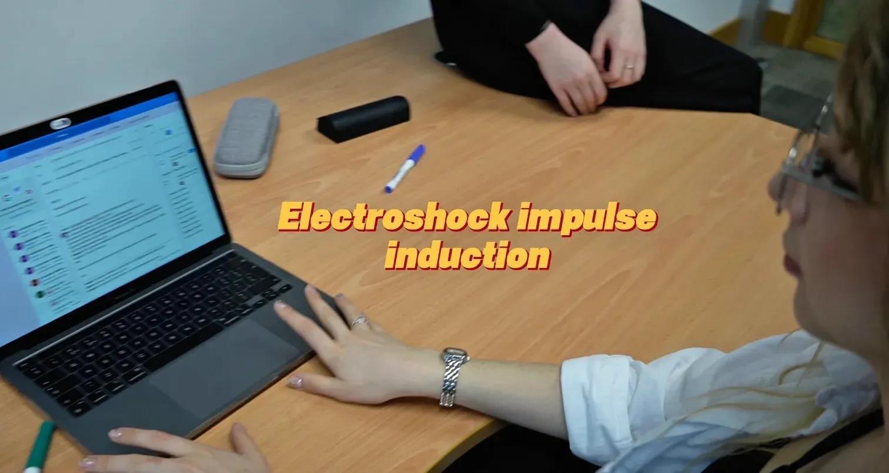
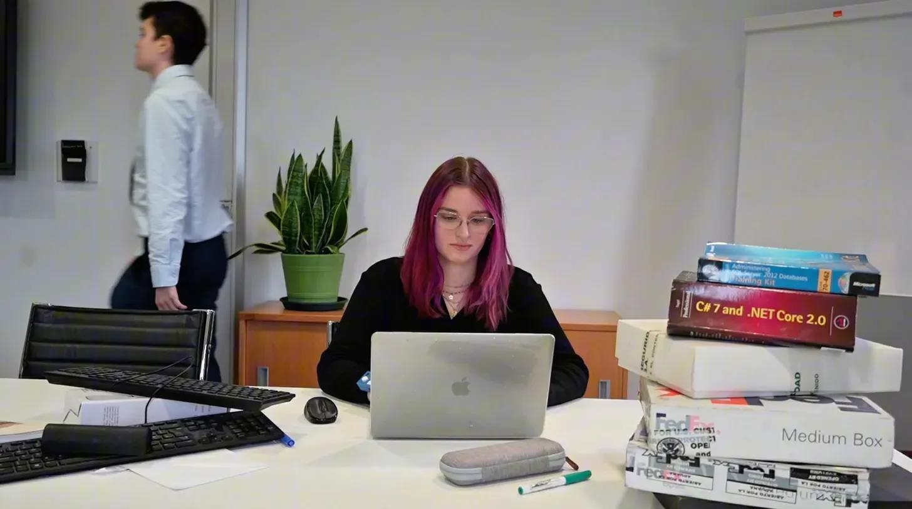

EfficenSee
What happens when workplace surveillance is taken to its logical extreme? EfficenSee was designed to answer that. A wearable productivity tracker that can deduct your salary in real time, let your colleagues report you, make you think where the productivity monitoring crosses the line with surveillance.

The product reveal — EfficenSee, the dealbreaker to every progressive office environment.

Your body, monitored — tracking more than hours to always keep an eye on you and support or encourage when needed.

Your colleagues are watching too — because accountability works best when it comes from within the team.

Rewarded for compliance — gratitude is a feature. Good work doesn't go unnoticed, and neither does anything else.

Incentivised productivity — when gentle reminders aren't enough, EfficenSee finds a more direct approach.

Always watching — our family cares about you, and you care about productivity.
The artefact, EfficenSee, takes the form of an arm-worn device housing LED indicators, a buzzer and a button. Green lights meant approved productivity levels. Red meant a salary deduction. A companion Figma sidebar displayed every team member's data to their colleagues, enabling peer reporting. The entire system was presented through a satirical video advertisement scripted in deliberately corporate language and referencing Orwell's 1984 to make the absurdity feel disturbingly plausible.
Modelled in FreeCAD and 3D printed as a medium-fidelity prototype, a Wizard of Oz approach was used in the advertisement to simulate full functionality. A structured focus group session was designed around the artefact, using Mentimeter word clouds, whiteboard mapping and role-play scenarios to capture participant reactions across both employee and employer perspectives.